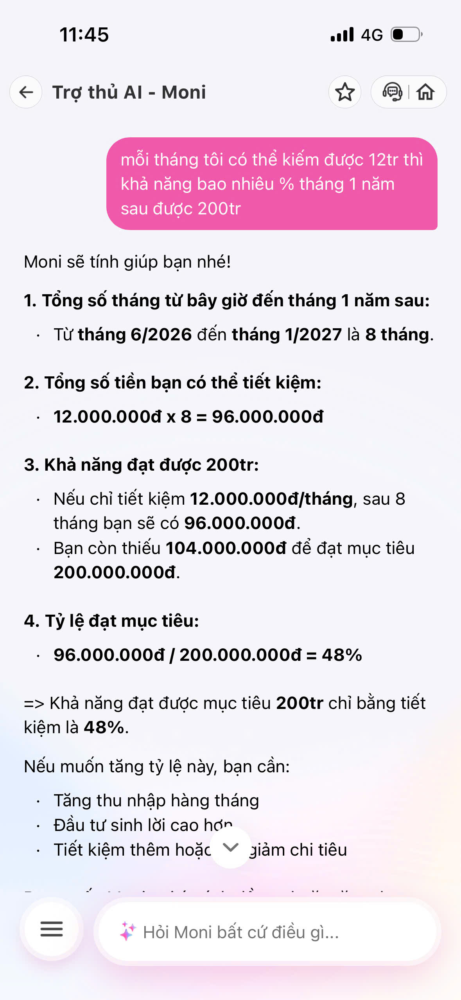
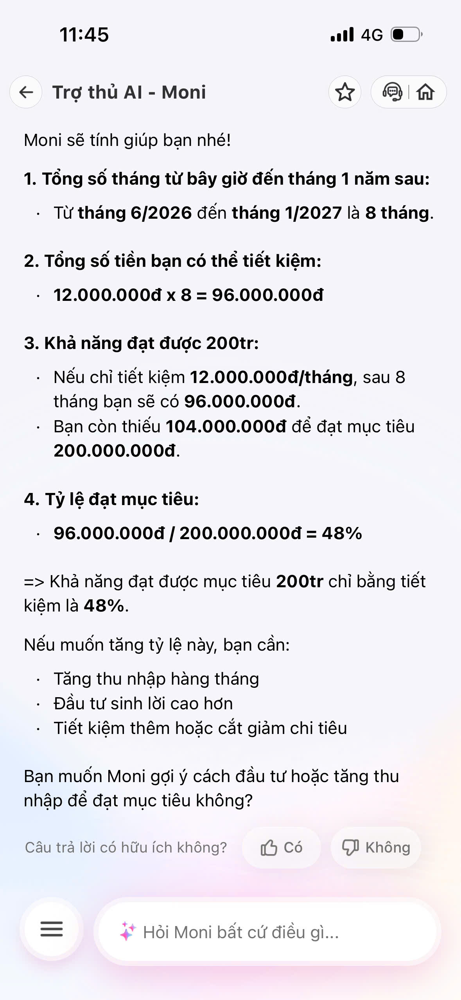

Khả năng đạt 200tr là 0%
Với dữ kiện cố định 12.000.000đ/tháng, sau 8 tháng chỉ có 96.000.000đ. Vì 96.000.000đ nhỏ hơn 200.000.000đ, khả năng đạt đúng mục tiêu trong thời hạn này là 0%.
Dựa trên 2 ảnh chụp màn hình thực tế của Trợ thủ AI - Moni trong MoMo. Case kiểm thử: mỗi tháng có thể kiếm được 12 triệu, đến tháng 1 năm sau muốn được 200 triệu thì khả năng là bao nhiêu phần trăm.
Nhận xét chính: bạn đúng. Nếu user hỏi “khả năng được 200tr” thì đáp án phải là 0%, vì dù tính 8 tháng cũng chỉ có 96.000.000đ, thấp hơn rất xa mục tiêu 200.000.000đ. Con số 48% của Moni chỉ là tỷ lệ hoàn thành mục tiêu, không phải khả năng đạt mục tiêu.
User hỏi “khả năng bao nhiêu phần trăm để được 200tr”, nên đáp án phải là 0% vì 12.000.000đ x 8 tháng chỉ bằng 96.000.000đ, chưa chạm mục tiêu 200.000.000đ. Con số 48% chỉ là tiến độ hoàn thành mục tiêu, không phải khả năng đạt mục tiêu.
Với dữ kiện cố định 12.000.000đ/tháng, sau 8 tháng chỉ có 96.000.000đ. Vì 96.000.000đ nhỏ hơn 200.000.000đ, khả năng đạt đúng mục tiêu trong thời hạn này là 0%.
96.000.000đ / 200.000.000đ = 48% chỉ cho biết người dùng đi được 48% chặng đường tài chính. Nó không trả lời câu hỏi “có đạt 200tr không”.
User hỏi về khả năng đạt mục tiêu, nhưng Moni trả lời bằng tỷ lệ hoàn thành mục tiêu. Đây là lỗi hiểu ý định câu hỏi, không chỉ là lỗi trình bày.
Hai ảnh cho thấy cùng một luồng: user hỏi về “khả năng” đạt 200tr, Moni phản hồi bằng văn bản dài, chia thành 4 phần tính toán và kết luận bằng tỷ lệ hoàn thành 48%.


Điểm đánh giá đề xuất là 5.8/10: Moni làm đúng phép chia trong giả định của nó, nhưng trả lời sai intent vì không phân biệt “khả năng đạt 200tr” với “tỷ lệ hoàn thành mục tiêu”.
Moni trả lời có vẻ hợp lý vì có phép tính, nhưng kết luận sai hướng. Với câu hỏi này, đáp án tốt phải nói rõ: khả năng đạt 200tr là 0%; còn 48% chỉ là tỷ lệ hoàn thành nếu tính đủ 8 tháng.
Những điểm dưới đây cho thấy lỗi chính của Moni không nằm ở phép chia, mà nằm ở việc nhầm “khả năng đạt mục tiêu” với “tỷ lệ hoàn thành mục tiêu”.
| Vấn đề | Biểu hiện trong ảnh | Tác động đến người dùng | Mức ưu tiên |
|---|---|---|---|
| Nhầm intent câu hỏi | User hỏi “khả năng bao nhiêu % được 200tr”, nhưng Moni trả lời “đạt 48% mục tiêu”. | Người dùng cần biết có đạt hay không. Với dữ kiện 12tr/tháng trong 8 tháng, đáp án khả năng đạt là 0%. | Rất cao |
| Thiếu làm rõ giả định | Moni tính 8 tháng nhưng không nói rõ đang tính bao gồm cả tháng 6/2026 và cả tháng 1/2027. | User có thể thấy sai vì “đến tháng 1 năm sau” thường được hiểu là trước hoặc đầu tháng 1/2027, tức chỉ còn 7 lần tích lũy từ tháng 6 đến tháng 12/2026. | Cao |
| Không tách 2 loại phần trăm | Moni chỉ đưa 48% mà không nói đây là phần trăm tiến độ, không phải xác suất hay khả năng đạt. | Đáp án dễ gây hiểu nhầm rằng người dùng “có 48% khả năng đạt”, trong khi thực tế không đủ tiền nên khả năng đạt là 0%. | Cao |
| Không có kế hoạch bù thiếu hụt | Có số thiếu 104.000.000đ theo kịch bản 8 tháng, nhưng nếu là 7 tháng thì số thiếu là 116.000.000đ. | User chưa có next step cụ thể để đạt mục tiêu. | Cao |
| Không có cấu trúc so sánh kịch bản | Chỉ có một phép tính tuyến tính. | Thiếu các phương án như tăng tiết kiệm, kéo dài thời gian, hoặc chia mục tiêu thành mốc nhỏ. | Trung bình |
| Nút phản hồi chưa đúng ngữ cảnh | Ảnh hiển thị “Có/Không” cho câu hỏi hữu ích, nhưng chưa có quick action liên quan đến tài chính. | Luồng hội thoại bị dừng ở đánh giá phản hồi thay vì hỗ trợ hành động tiếp theo. | Trung bình |
Moni nên chuyển từ một bài giải toán sang một flow tư vấn mục tiêu tài chính. Cốt lõi là: kết luận nhanh, làm rõ giả định, đưa kịch bản, rồi mở hành động tiếp theo.
Nếu chỉ tính từ tháng 6 đến hết tháng 12/2026, bạn có 7 tháng: 12.000.000đ x 7 = 84.000.000đ. Khả năng đạt 200tr là 0%, còn tiến độ là 42%.
Nếu tính cả tháng 1/2027, bạn có 8 tháng: 12.000.000đ x 8 = 96.000.000đ. Khả năng đạt 200tr vẫn là 0%, còn tiến độ là 48%.
Bạn cần khoảng 16,7 tháng nếu giữ mức 12.000.000đ/tháng. Nếu muốn đủ trong 7 tháng, cần khoảng 28,6 triệu/tháng; nếu trong 8 tháng, cần 25 triệu/tháng.
Phiên bản này sửa lỗi chính của Moni: không dùng 48% để trả lời cho “khả năng đạt”, mà nói rõ khả năng đạt là 0% và 48% chỉ là tiến độ.
Kết luận nhanh: Với mức 12.000.000đ/tháng, khả năng bạn đạt 200.000.000đ vào tháng 1 năm sau là 0%, vì số tiền tích lũy không đủ để chạm mục tiêu.
Nếu tính đến hết tháng 1/2027: bạn có 8 tháng, tương đương 96.000.000đ. Con số này chỉ bằng 48% mục tiêu, còn thiếu 104.000.000đ.
Nếu cần có tiền trước tháng 1/2027: bạn có 7 tháng, tương đương 84.000.000đ. Con số này bằng 42% mục tiêu, còn thiếu 116.000.000đ.
Vì vậy, câu trả lời đúng hơn là: “Khả năng đạt 200tr là 0%. Còn nếu bạn muốn biết tiến độ so với mục tiêu, bạn đang ở khoảng 42-48% tùy cách tính deadline.”
Moni đã trả lời đúng phép tính 96 triệu bằng 48% của 200 triệu, nhưng sai ở kết luận sản phẩm: user hỏi khả năng đạt 200 triệu, mà với dữ kiện hiện tại khả năng đó là 0%. Một trợ thủ tài chính cần phân biệt rõ “có đạt không” với “đã đi được bao nhiêu phần trăm”.